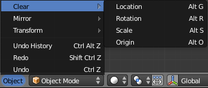
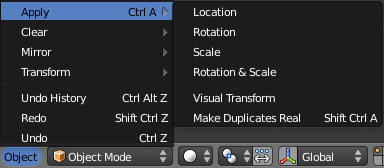

清除物体变换¶
清除变换只需重置变换值。物体的位置和旋转值返回到 0，并返回 1 的缩放值。
参考
Mode: Object Mode
菜单:
热键::
Alt-G, Alt-S, Alt-R, Alt-O清除选项¶

Clear Transformation menu.
- 清除位移
Alt-G - Clear (reset) the location of the selection. This will move the selection back to the coordinates (0, 0, 0).
- 清除缩放:
Alt-S 清除 (重置) 规模的选择。这将调整回它被创建时的大小选择。
- 清除旋转
Alt-R 清除 (重置) 的旋转所选内容。这将所选物体在每个平面的旋转值设置为 0 度。
- 清除原点
Alt-O 清除 (重置) 子物体的原点信息。这将导致子物体移动到父级的坐标。
Apply Object Transformations¶
参考
Mode: Object Mode
菜单:
快捷键:
Ctrl-A应用变换值实质上重置的值的物体的位置、 旋转或规模，但实际上不做任何对该对象。中心点移动到原点和变换的值设置为零。就规模而言，缩放值返回到 1。
To apply a transform select the Apply sub-menu from the Object menu or
use the shortcut Ctrl-A and select the appropriate transform to apply.
Make Duplicates Real unlinks linked duplicates so each duplicate now has its own data-block.
应用选项¶

Apply Transformation menu.
- 应用位移
Ctrl-A - Apply (set) the location of the selection. This will make Blender consider the current location to be equivalent to 0 in each plane i.e. the selection will not move, the current location will be considered to be the “default location”. The Object Center will be set to actual (0, 0, 0) (where the colored axis lines intersect in each view).
- 应用旋转
Ctrl-A 应用 (集) 的旋转所选内容。这将使Blender考虑当前的旋转必须等价于每一个平面上是 0 度，即所选内容将不会旋转，当前的旋转将被视为”默认旋转”。
- 应用缩放
Ctrl-A 应用 (集) 的所选内容规模。这将使Blender考虑当前的规模必须等价于 0 在每个平面上，即所选内容将不按比例缩放，将考虑当前规模”默认的尺度”。
- 应用旋转和缩放
Ctrl-A 应用 (集) 旋转和缩放所选内容。同时做上述的两个应用程序。
- All Transforms to Deltas
- Converts all “normal” transformations to Delta transforms.
- Animated Transform to Deltas
- Converts the “normal” transformation animations (animations done to the translation,
scale, and rotation values) to Delta transforms.
To use this tool simply select the object with the animations that you want to convert press
Ctrl-Aand select Animated Transform to Deltas. - 应用可视移动
Ctrl-A - Apply (set) the result of a constraint and apply this back to the Object’s location, rotation and scale.
- 使复制实体化
Shift-Ctrl-A 使任何重复项附加到这真正的物体，以便可以对它们进行编辑。